Animated cards and borders for Rust UIs
Cards with personality: border beams and shine borders, spotlight and magic cards that follow the pointer, tilt and glare, glass surfaces, pixel and decay reveals, and bento grids. Content inside stays fully interactive.
All Cards & Borders components
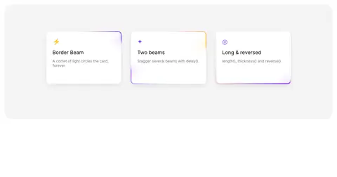
Border Beam
Cards & BordersA comet of light travels around the border, fading from one color to another along its tail.
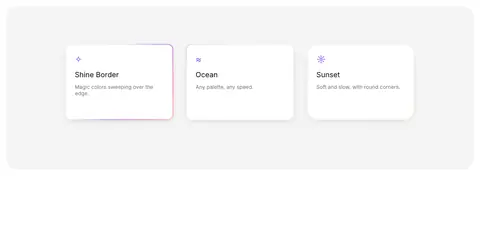
Shine Border
Cards & BordersA band of multi-colored light drifts diagonally around the card's border.
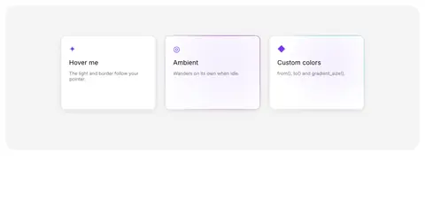
Magic Card
Cards & BordersA spotlight follows the pointer inside the card while the border lights up in a gradient around it.
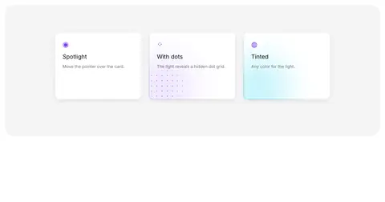
Spotlight Card
Cards & BordersA dark card lit by a soft spotlight that follows the pointer, optionally revealing a dot grid.
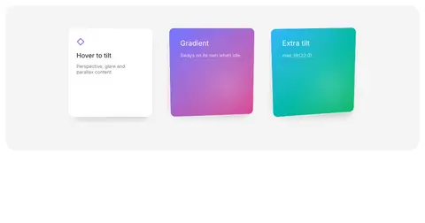
Tilt Card
Cards & BordersThe card tilts in 3D toward the pointer with real perspective, a moving glare and parallax content.
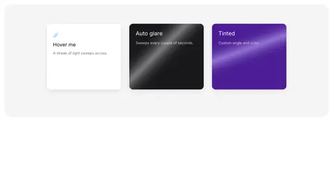
Glare Card
Cards & BordersA diagonal streak of glare sweeps across the card on hover, with a soft sheen under the pointer.
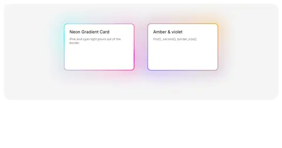
Neon Gradient Card
Cards & BordersA card wrapped in an animated two-tone gradient border that bleeds a big neon glow around it.
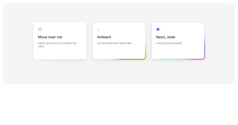
Glowing Border Card
Cards & BordersThe border lights up in a multi-color arc on the side facing the pointer, gliding around as it moves.
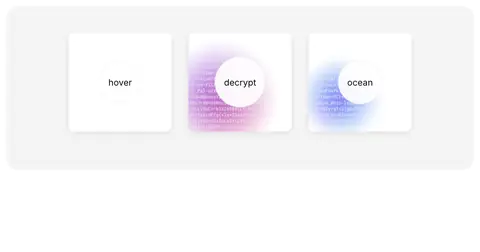
Encrypted Card
Cards & BordersScrambled characters are revealed over a glowing gradient in a circle around the pointer.
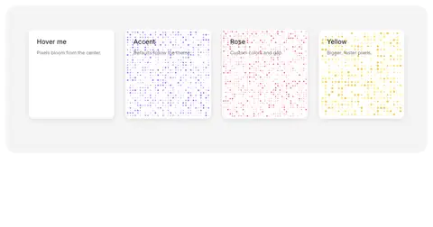
Pixel Card
Cards & BordersShimmering pixels fill the card on hover, spreading out from the center.
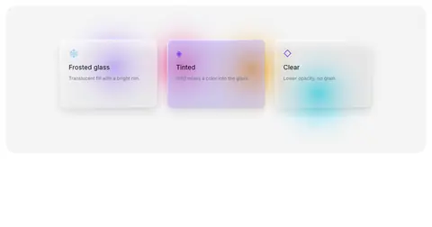
Glass Card
Cards & BordersA frosted-glass card with a translucent fill, a light-catching rim and a soft shadow.
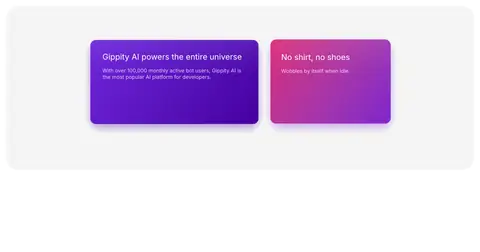
Wobble Card
Cards & BordersA bold card wobbles toward the pointer on a springy band while its content drifts the other way.
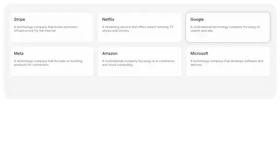
Card Hover Effect
Cards & BordersA soft highlight slab slides between cards in a grid, following the pointer.
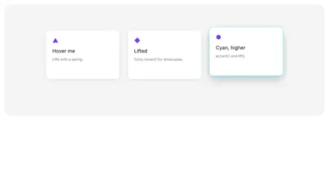
Hover Lift Card
Cards & BordersThe card rises toward you on hover: a deeper shadow, an accent glow and a warmer border.
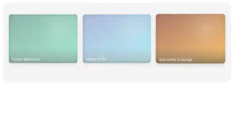
Focus Cards
Cards & BordersThe hovered card stays in focus while the others shrink back, dim and haze over.
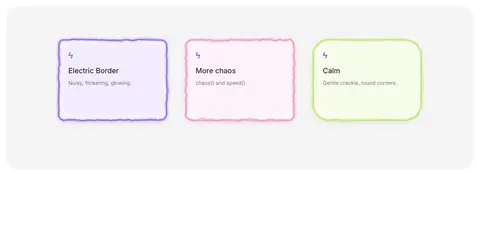
Electric Border
Cards & BordersA jittery, crackling border of electricity with layered glow.
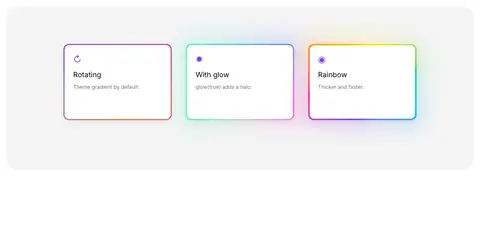
Animated Gradient Border
Cards & BordersA conic gradient keeps rotating around the border, optionally with a matching glow.
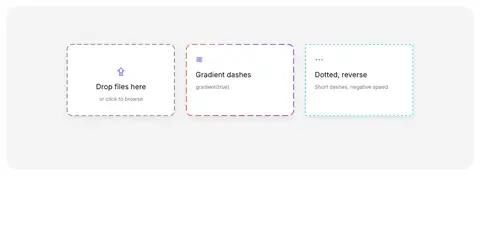
Marching Border
Cards & BordersDashes march around the border like a selection marquee or a drop zone.
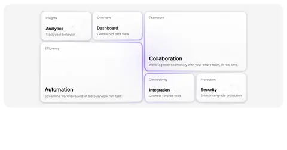
Magic Bento
Cards & BordersA bento grid where a spotlight follows the pointer and lights card borders; the hovered card tilts and sparkles with particles.
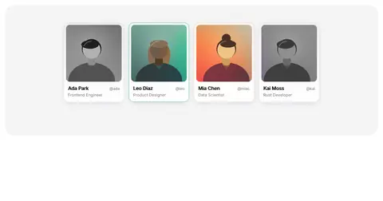
Chroma Grid
Cards & BordersProfile tiles rendered in grayscale, with a circle of full color that follows the pointer across the grid.
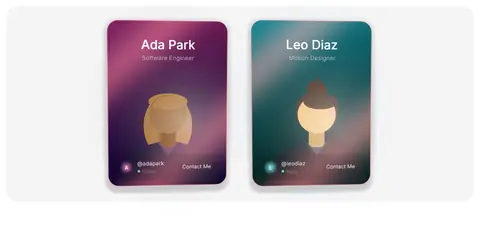
Profile Card
Cards & BordersA holographic trading-card profile that tilts toward the pointer while rainbow foil and a glare slide across it.
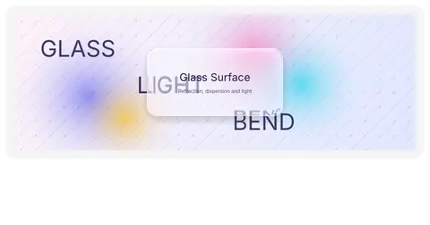
Glass Surface
Cards & BordersA refracting glass panel: the backdrop bends and compresses toward its rim with color fringes and specular edges.
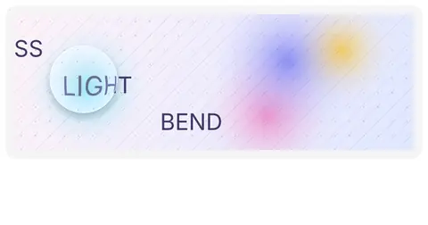
Fluid Glass
Cards & BordersA liquid glass lens that glides after the pointer, magnifying and bending everything beneath it with rainbow edges.
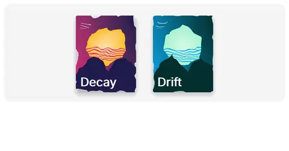
Decay Card
Cards & BordersA poster card whose picture tears and ripples with turbulence as the pointer moves over it, then slowly heals.
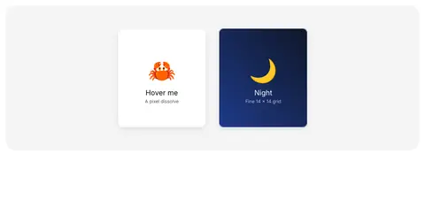
Pixel Transition
Cards & BordersA card that swaps to its second face through a pixel dissolve: squares pop in at random, then away again.
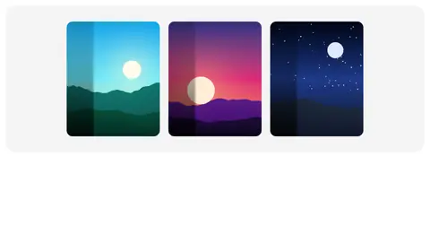
Direction Aware Hover
Cards & BordersA card whose caption overlay slides in from the edge the pointer entered through, and leaves the way it exits.
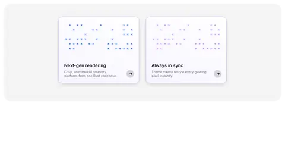
Glowing Stars Card
Cards & BordersA card with a grid of tiny stars where random ones softly glow; more of them light up on hover.
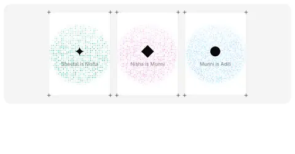
Canvas Reveal Effect
Cards & BordersOn hover a flickering dot-matrix ripples out from the center of the card while the icon lifts and the title appears.
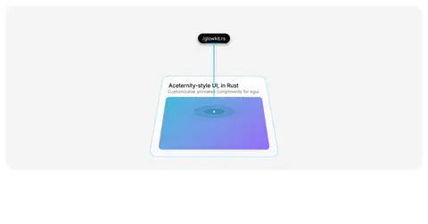
3D Pin
Cards & BordersA card that tilts back in perspective on hover while a pin rises from its center with a label and pulsing rings.
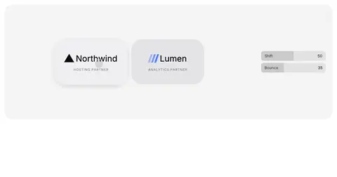
Split Showcase
Cards & BordersTwo partner cards joined into one capsule by a dotted seam; the hovered half springs outward and rounds its inner corners.
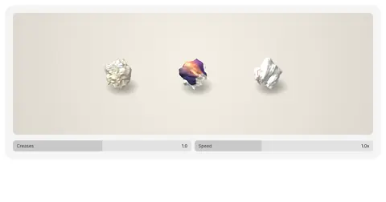
Crumple Reveal
Cards & BordersBalls of screwed-up paper on a desk; click one and it smooths out into the letter or photo it was, still faintly creased.
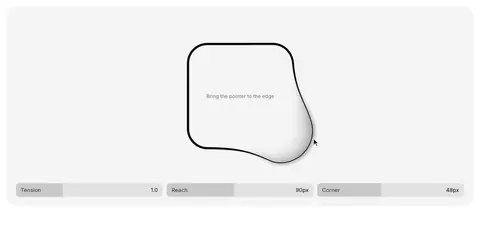
Elastic Frame
Cards & BordersA rounded frame drawn as an elastic string: bring the pointer to an edge and it plucks outward into a glowing veil, then springs back with a wobble.
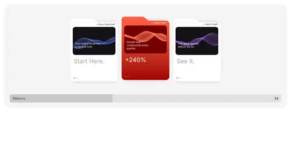
Card Bookmark
Cards & BordersCards cut like bookmarks with silky wave-ribbon art; the active one fills with its colour, lifts and glows while the others wait in the dark.
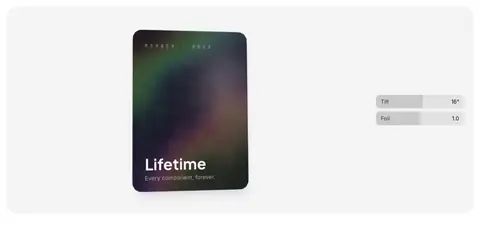
Holo Card
Cards & BordersA holographic foil card that tilts toward the pointer in 3D, its thin-film sheen sliding with the angle.
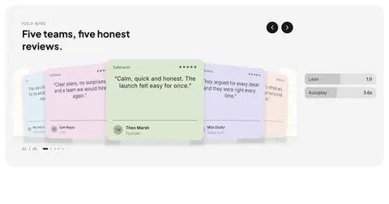
Quote Deck
Cards & BordersA testimonial deck fanned across the width: the focused quote upright, the rest leaning away, shrinking and dimming.
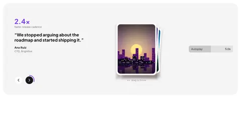
Story Deck
Cards & BordersCustomer stories beside a deck of portrait cards you can throw; autoplay runs with a progress ring round the next button.
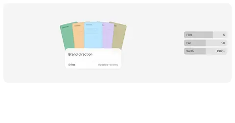
Project Folder
Cards & BordersA folder with pastel pages peeking out: hover and they fan up on rippling springs, press and they slide out into a row as the frosted front sinks.
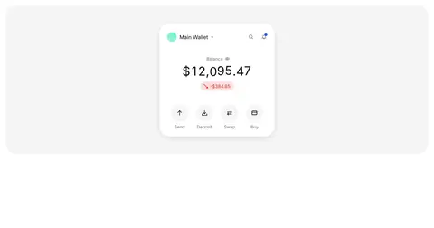
Wallet Card
Cards & BordersA wallet card whose balance rolls like an odometer when it changes, folds into dots behind the eye toggle, and carries a gain or loss pill that flips with it.